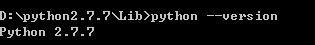
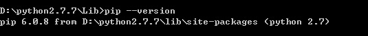
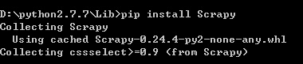
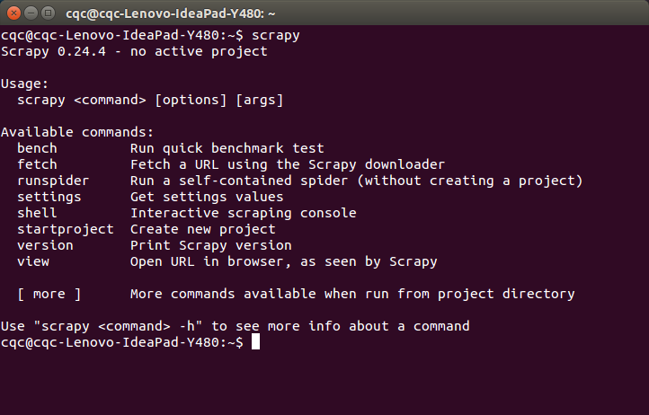

Python爬虫进阶三之Scrapy框架安装配置
初级的爬虫我们利用urllib和urllib2库以及正则表达式就可以完成了，不过还有更加强大的工具，爬虫框架Scrapy，这安装过程也是煞费苦心哪，在此整理如下。
Windows 平台：
我的系统是 Win7，首先，你要有Python，我用的是2.7.7版本，Python3相仿，只是一些源文件不同。
官网文档：http://doc.scrapy.org/en/latest/intro/install.html，最权威哒，下面是我的亲身体验过程。
1.安装Python
安装过程我就不多说啦，我的电脑中已经安装了 Python 2.7.7 版本啦，安装完之后记得配置环境变量，比如我的安装在D盘，D:\python2.7.7，就把以下两个路径添加到Path变量中
D:\python2.7.7;D:\python2.7.7\Scripts
配置好了之后，在命令行中输入 python –version，如果没有提示错误，则安装成功

2.安装pywin32
在windows下，必须安装pywin32，安装地址：http://sourceforge.net/projects/pywin32/
下载对应版本的pywin32，直接双击安装即可，安装完毕之后验证：

在python命令行下输入
import win32com
如果没有提示错误，则证明安装成功
3.安装pip
pip是用来安装其他必要包的工具，首先下载 get-pip.py
下载好之后，选中该文件所在路径，执行下面的命令
python get-pip.py
执行命令后便会安装好pip，并且同时，它帮你安装了setuptools
安装完了之后在命令行中执行
pip --version
如果提示如下，说明就安装成功了，如果提示不是内部或外部命令，那么就检查一下环境变量有没有配置好吧，有两个路径。

4.安装pyOPENSSL
在Windows下，是没有预装pyOPENSSL的，而在Linux下是已经安装好的。
安装地址：https://launchpad.net/pyopenssl
5.安装 lxml
lxml的详细介绍 点我 ，是一种使用 Python 编写的库，可以迅速、灵活地处理 XML
直接执行如下命令
pip install lxml
就可完成安装，如果提示 Microsoft Visual C++库没安装，则 点我 下载支持的库。
6.安装Scrapy
最后就是激动人心的时刻啦，上面的铺垫做好了，我们终于可以享受到胜利的果实啦！
执行如下命令
pip install Scrapy

pip 会另外下载其他依赖的包，这些就不要我们手动安装啦，等待一会，大功告成！
7.验证安装
输入 Scrapy
如果提示如下命令，就证明安装成功啦，如果失败了，请检查上述步骤有何疏漏。

Linux Ubuntu 平台：
Linux 下安装非常简单，只需要执行几条命令几个
1.安装Python
sudo apt-get install python2.7 python2.7-dev
2.安装 pip
首先下载 get-pip.py
下载好之后，选中该文件所在路径，执行下面的命令
sudo python get-pip.py
3.直接安装 Scrapy
由于 Linux下已经预装了 lxml 和 OPENSSL
如果想验证 lxml ，可以分别输入
sudo pip install lxml
出现下面的提示这证明已经安装成功
Requirement already satisfied (use --upgrade to upgrade): lxml in /usr/lib/python2.7/dist-packages
如果想验证 openssl，则直接输入openssl 即可，如果跳转到 OPENSSL 命令行，则安装成功。
接下来直接安装 Scrapy 即可
sudo pip install Scrapy
安装完毕之后，输入 scrapy
注意，这里linux下不要输入Scrapy，linux依然严格区分大小写的，感谢kamen童鞋提醒。
如果出现如下提示，这证明安装成功
Usage:
scrapy <command> [options] [args]
Available commands:
bench Run quick benchmark test
fetch Fetch a URL using the Scrapy downloader
runspider Run a self-contained spider (without creating a project)
settings Get settings values
shell Interactive scraping console
startproject Create new project
version Print Scrapy version
view Open URL in browser, as seen by Scrapy
[ more ] More commands available when run from project directory
截图如下

如有问题，欢迎留言！祝各位小伙伴顺利安装！